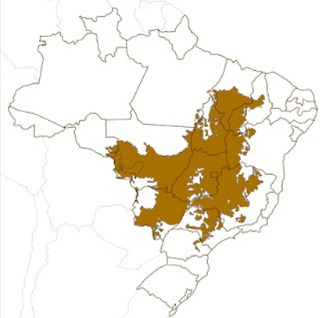
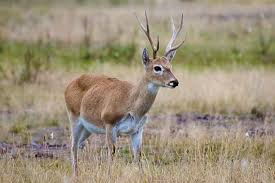

História, localização e importância do bioma
O Cerrado é o segundo maior bioma da América do Sul e ocupa grande parte do território brasileiro. É considerado a savana mais biodiversa do mundo, reunindo plantas, animais, formações vegetais únicas e uma enorme riqueza hídrica que abastece grande parte do país.
O Cerrado está localizado principalmente no Planalto Central brasileiro, abrangendo estados como Goiás, Mato Grosso, Mato Grosso do Sul, Tocantins, Minas Gerais, Bahia, Maranhão, Piauí e Distrito Federal.

O Cerrado é considerado o "berço das águas" do Brasil. Grandes bacias hidrográficas, como a Amazônica, Tocantins-Araguaia, São Francisco e Prata, dependem diretamente de seus aquíferos e nascentes.
Além disso, sua biodiversidade impressiona: são mais de 12 mil
espécies de plantas, milhares de animais e um equilíbrio ecológico
único que sustenta diferentes ecossistemas.
